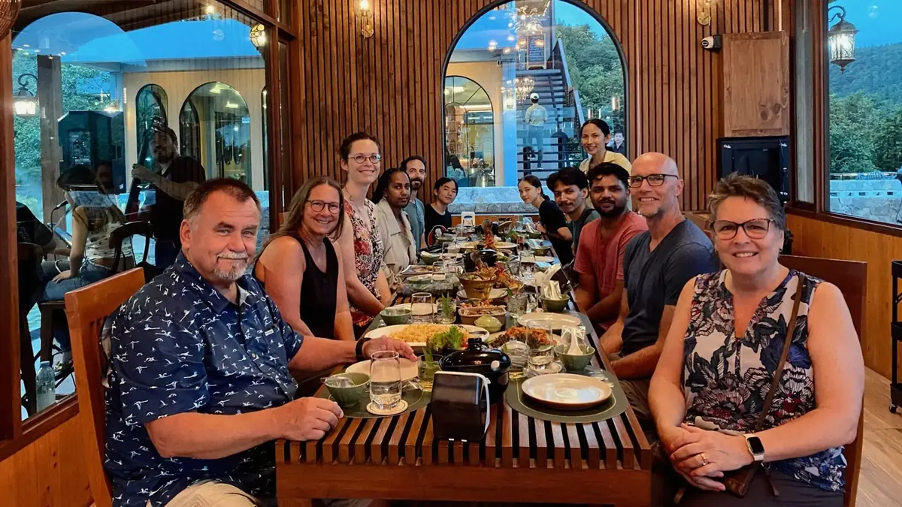
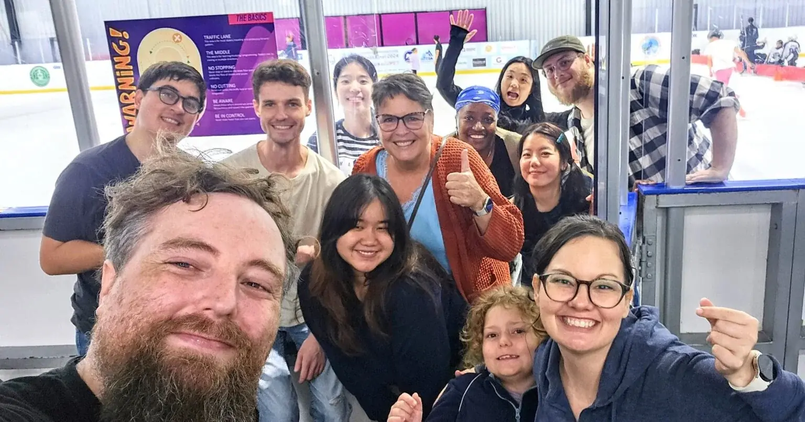

We create
Films, animation, storybooks, apps and games built for a specific people group rather than adapted to them afterwards.
A YWAM communication ministry, with teams in Chiang Mai
Film, animation and still media made for peoples who have no church that can reach them, in their own language and their own visual world.

The need
Not no church nearby. No church that shares their language, their culture and their way of understanding a story well enough to reach them at all. For those peoples, a translated pamphlet or a film shot somewhere else in a language they half follow does not land, however true it is.
Create International exists for that gap. Its stated purpose is to declare God's glory in all the world by producing and distributing indigenous media resources, to initiate and strengthen evangelistic and church planting efforts among the remaining least evangelized peoples.
What they do
Create International is a communication ministry of Youth With A Mission in its own right, with teams on several continents and its own international coordination office. Several of those teams are based in and around Chiang Mai, which is why it is listed here among our schools, but it is not a YWAM Chiang Mai programme and it does not run on our terms.
Films, animation, storybooks, apps and games built for a specific people group rather than adapted to them afterwards.
Artists, filmmakers and storytellers are taught to make this work themselves, in person and online, so it does not stay dependent on visiting crews.
Almost nothing here is made alone. Teams work with local believers, national churches and other agencies who know the ground.
The network
Create is organised into teams by region and by medium rather than into departments. This is the whole network, with the Chiang Mai based teams marked.
Here in Chiang Mai
The in-house research and development network. Current work includes contextualized games, both mobile and paper based, Discovery Bible Studies across the city aimed at a disciple making movement, narrative film made with and for Thais specifically, and ongoing online training.
The Global Communication and Resource Centre oversees and assists every Create film and animation project worldwide, and does the networking and equipping side of cross-cultural ministry.
Culturally relevant storybooks, colouring books, animations and interactive apps for children with little access to any of it, built so children see characters who resemble them in settings they recognise.
English teaching, disciple making movement work, community development, and hosting DTS outreach teams.
Even failure will ultimately lead to God's Kingdom growing amongst the Unreached.
Create Labs, on its own research and development work
Training
Create's training is not a school with a start date and a graduation. It is delivered as resources, online courses and mentoring through Campfire, their training platform, and it is arranged around what you want to make.
Narrative films, documentaries and training videos.
Animated narrative, documentary and training films.
Graphics, storybooks, comics and colouring books.
Built to order for a specific audience or a specialised need that none of the above covers.
Who they are
Create asks for artists and church planters, which is what you would expect. It also asks, just as plainly, for accountants, maintenance people and event coordinators, because a media ministry running on several continents is an organisation before it is a studio.
Their own line on this is worth repeating: it is not just tasking, but a calling as well. The Seeds team currently works largely remotely from around the globe and has said it wants a dedicated in-person team in Chiang Mai, which is the most concrete opening on this page.

Get involved
Applications and staff enquiries go to Create International directly, not through the YWAM Chiang Mai office.
On staff, long term or short term, in Chiang Mai or with one of the teams elsewhere.
A shorter commitment, useful if you want to find out whether this is the work before you commit to it.
Fund a specific piece of work rather than a general budget line, and see what it produced.
The least visible of the four and the one they name first when asked what they need.
Contact
Email Create Labs, or call +66 95 105 7723.
Create International is a separate YWAM ministry. For questions about the wider YWAM Chiang Mai base rather than Create's work, use the base contact page instead.
Follow along
Get social
Create International runs its own sites: createinternational.com for the ministry as a whole, createlabs.community for the research team, and createseeds.org for the children's work. Their least evangelized peoples list is the document behind most of what they choose to make.